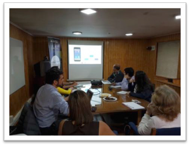
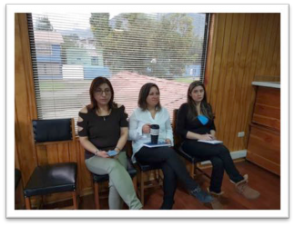
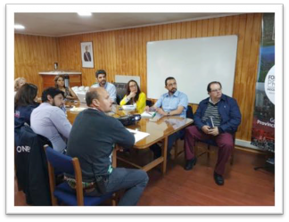

Acta de Reunión # 6

Imágenes de la reunión Fecha: 24, febrero del 2017

Asunto: Taller de capacitación a otras instituciones publicas y empresas de servicios básicos- Presencial
Participantes:
Organismo Públicos
Colaboradores Gobernación
Anibal Contreras, Jefe Proyecto MCI Objetivo de la reunión:

Demo de la versión final de la plataforma para lograr la validación y aceptación de la plataforma e inicio del periodo de marcha blanca.
Temas tratados:
Revisión de la Aplicación CooperaNet. Acuerdos:
Incorporar botones de discado rapido para ABC.
Incorporar resumen de los ultimos 5 incidentes registrados en el home page.
Actualizar link a chat de Telegram para nuevo chat room solo notificaciones.

Crear Chat Telegram solo para Actores (Organismos Públicos y Empresas de Servicios).
Mejorar el texto para Subscripcion a Alertas Locales.
Hacer mas enfasis en la subscripcion via email.
Equipo Gobernación creará correos genéricos gmail para cada JV.
Permitir que el mapa identifique la ubicacion del celular y deje esta por defecto.
Agregar SISS como actor a todos los tipos de incidente relacionados con Aguas Patagonia.
3 sesiones en 2 semanas para reforzar la capacitación a los usuarios de la comunidad.